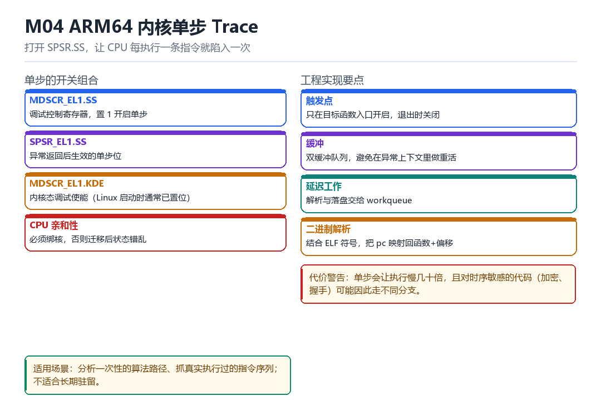

M04
ARM64 内核单步 Trace
MDSCR_EL1、SPSR.SS、CPU 亲和性、step hook、双缓冲、workqueue、二进制解析
打开一个位，让 CPU 每执行一条指令就陷入一次。
4.1 开关组合

| 寄存器/位 | 作用 | 注意 |
|---|---|---|
| MDSCR_EL1.SS | 调试控制寄存器，置 1 开启单步 | 先读出实际值再改，别假设它是 0 |
| SPSR_EL1.SS | 异常返回后生效的单步位 | 每次返回都要重设 |
| MDSCR_EL1.KDE | 内核态调试使能 | 复位为 0，但 Linux arm64 启动时通常已置位 |
| CPU 亲和性 | 绑定 CPU | 迁移会打乱每核的调试状态 |
4.2 工程实现四点
- 触发点：只在目标函数入口开启，退出时立刻关闭——不要全量开。
- 缓冲：用双缓冲队列，避免在异常上下文里做重活（异常上下文不能睡眠）。
- 延迟工作：解析与落盘交给 workqueue。
- 二进制解析：结合 ELF 符号，把 pc 映射回“函数 + 偏移”，否则一堆地址没法读。
记录一条单步事件的骨架
static void on_step(struct pt_regs* regs) {
struct rec r = { .pc = regs->pc, .sp = regs->sp, .ts = ktime_get() };
push_ring(&r); // 无锁环形缓冲
if (ring_full()) schedule_work(&drain_work);
}4.3 代价
单步会让执行慢几十倍。对时序敏感的代码（加密、握手、超时判断）可能因此走不同分支，甚至触发基于超时的反调试。所以它只适合“短时间、定点”的观测。
4.4 本章自测
- 开启单步需要设置哪几个位？
- 为什么不能在异常上下文里做重活？
- 单步可能怎样改变程序行为？
- 如何缩小单步的范围？
4.5 深入：单步为什么会“越走越慢”
每执行一条指令就陷入一次异常，意味着每次都要保存/恢复现场、走一遍异常处理路径。在现代 CPU 上，这个开销可能是正常执行的几十倍。更麻烦的是，频繁异常会污染分支预测与缓存。
| 指标 | 正常 | 单步 |
|---|---|---|
| 指令吞吐 | 1x | 1/30 ~ 1/100 |
| 缓存命中 | 高 | 低（异常处理占缓存） |
| 时序确定性 | 高 | 低 |
4.6 实战：把单步限制在一小段
范围控制（伪代码）
if (regs->pc == target_start) enable_singlestep();
if (regs->pc == target_end) disable_singlestep();
// 加一个“最大步数”保险，防跑飞4.7 原理推演：为什么单步能“看到一切”
因为每执行一条指令就陷入一次，意味着你可以在“每一条指令之后”检查寄存器、内存、甚至改变控制流。这是最强的观测能力，也是最高的开销。
| 能力 | 单步 | 断点 | kprobe |
|---|---|---|---|
| 看到每条指令 | 是 | 否 | 否 |
| 改控制流 | 是 | 是 | 是 |
| 开销 | 极高 | 低 | 中 |
所以单步的定位是“手术刀”：只在需要精确还原某段逻辑时用，不要当日常工具。
4.8 数据细节：单步期间的异常频率
| 代码类型 | 每秒异常数 | 说明 |
|---|---|---|
| 空循环 | 数百万 | 几乎全是异常 |
| 调用密集 | 数十万 | 每次调用多条指令 |
| 阻塞等待 | 很少 | 大部分时间在睡眠 |
这组数字说明：单步期间系统基本“不可用”。所以一定要限制范围，且准备好“随时关闭”的开关。
4.9 深入：为什么“双缓冲”是必须的
因为异常上下文不能睡眠、不能分配内存。如果一边产生事件一边写磁盘，就会在异常里做重活，导致系统卡死。双缓冲把“产生”和“消费”分开：异常里只写内存，另一个上下文慢慢处理。
| 方案 | 异常里的开销 | 数据丢失风险 |
|---|---|---|
| 直接写 | 极高 | 低 |
| 单缓冲 + 锁 | 中 | 中（可能丢） |
| 双缓冲无锁 | 低 | 低 |
实现要点：用“生产者-消费者”模型，生产者在异常里只做“写指针 + 原子递增”，消费者在 workqueue 里批量处理。
4.10 深入：为什么必须绑核
因为 MDSCR_EL1 是“每核”的寄存器。任务迁移到另一个核，那个核的调试状态可能是关闭的——于是“单步突然失效”或“状态错乱”。
绑核
set_cpus_allowed_ptr(current, cpumask_of(cpu));
// 记得在结束后恢复原来的 affinity4.11 实战：把 pc 映射回函数
解析符号
// 用 kallsyms 或 ELF 符号表，做“地址 → 函数 + 偏移”的映射
sym = lookup_symbol(regs->pc);
pr_info("%s+0x%lx\n", sym->name, regs->pc - sym->addr);